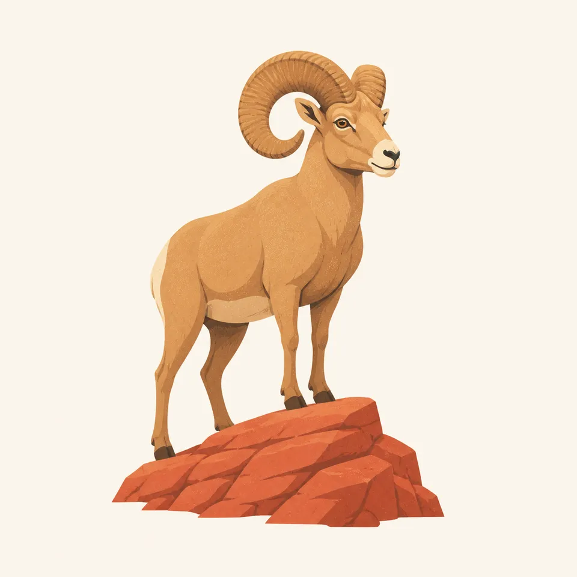
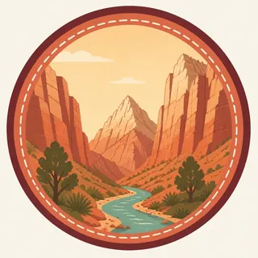

01
Zion Canyon
Cottonwoods, the river, and cliffs of Navajo sandstone. The canyon scenic drive is often a shuttle, not a private-car road. Check NPS before you arrive.
TrailMark Archive Edition
Utah | Virgin River
Navajo sandstone rises in cliffs the color of cooled fire, and the Virgin River still has the only right of way through the narrows.
Archive No. TM-ZIO-006
National Park since 1919
Collection Southwestern Parks
Park Overview
Zion National Park was established in 1919 in southwestern Utah, after an earlier life as Mukuntuweap National Monument. The Virgin River, not a rim road, is the main avenue.
Most great canyons are seen from above. Zion is often seen from the valley floor, so the walls occupy the sky. That reversal is the park.
Hanging gardens grow where water seeps through the sandstone. They are small, wet, and easy to love to death. Stay on the stone that was built for feet.
Emotional Thesis
In the wide parks you squint for scale. In Zion Canyon the scale comes to you. A cliff can block the sun while the opposite wall is already hot.
The river sounds small until you are standing in it. Then it is the only path, and the path is moving.
Landscape Highlights
01
Cottonwoods, the river, and cliffs of Navajo sandstone. The canyon scenic drive is often a shuttle, not a private-car road. Check NPS before you arrive.
02
Upstream the canyon pinches until the river is the trail. Water depth, flash-flood risk, and closures change daily. The decision belongs to the current NPS report, not to a photograph.
03
A separate entrance in the park's northwest corner. Finger canyons of red rock, fewer people, and the same sandstone story told at a different volume.
Wildlife
Zion wildlife sorts itself by the same elevation that sorts the temperature: canyon floor, ledge, and plateau.

01
Desert bighorn use the cliffs and talus. A long look is better than a close one.
02
California condors are sometimes overhead in this part of Utah. They are a regional conservation animal, not a guaranteed sighting.
03
Mule deer in the canyon bottom are calm around people and still wild. Feeding them is how that calm becomes a problem.
Geology
Navajo sandstone, the pale and salmon cliffs, records a Jurassic dune field. The Virgin River has been carving the canyon through that stone.
01
The famous sheer walls are the clean faces of cemented dunes, not lava and not the layered stairs of Grand Canyon.
02
Springs and seeps follow the contacts between rock layers. That is why gardens appear on cliffs that otherwise look dry.
03
Flash floods are geology in the present tense. A blue sky in the canyon does not describe the weather upstream.
The river runs higher with snowmelt. Wildflowers show on the talus. Trails that are wades in summer can be pushes against current now.
The valley is hot and the shuttle is the way most people move. Start early. The Narrows is a water-and-weather decision every day.
Cottonwoods turn along the river and the cliffs hold a lower sun. Many travelers would trade July for this month.
Snow on the rims, a quieter canyon, and ice where seeps cross the trail. Check NPS for road and trail status rather than assuming a summer map still applies.
Photography
Zion cliffs are so large they flatten unless you use the edge of the light.
01
One wall often lights the other. The best color is sometimes the bounce, not the sunlit face.
02
Water, cottonwood, or a bend gives the cliffs a size. Without it the sandstone becomes a pattern.
03
In the Narrows, protect the camera from water and do not stop in the current for a picture if people are behind you in a tight slot.
Field Notes
Zion is the rare canyon that makes you look up more than out, which changes the kind of quiet you brought with you.
TrailMark Field Notes

Badge Story
The Zion mark is built from cliff verticals and a river thread, so the circle has to imply height.
The red is Navajo sandstone, distinct from Grand Canyon layer cake.
Green at the base is cottonwood and garden, not lawn.
The badge should feel narrow even though the frame is round.
Archive No.006
LocationZion Canyon
ReleaseCanyon Mark
Stewardship / Safety
Zion risk is flash flood, exposure on high trails, and crowds in a narrow valley. Current shuttle rules and closures live on the NPS site.
If you enter the Narrows, read the flash-flood forecast that morning. Yesterday does not count.
High trails have real exposure. Turn around if the chain section is not your kind of walking.
Do not make new paths to a photograph. Biological soil crust and hanging gardens do not recover on a tourist schedule.
Food and deer do not mix. A fed deer becomes a deer that expects the next person to be a vending machine.
Current conditions, fees, and alerts are on the National Park Service site.
Continue the Archive
Grand Canyon opens the same region into a mile-deep gorge. Bryce is still ahead in the archive; Yosemite is the granite contrast.